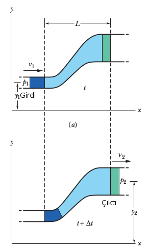
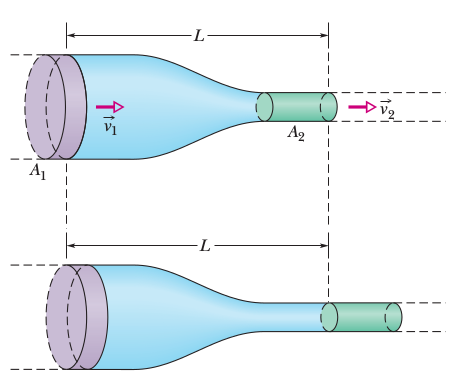

Süreklilik Denklemi

Üstteki gibi bir tüpten hava akışını düşünelim [1]. Tüpün duvarlarında kaçak olmadığına göre tupe birim zamanda giren hava kütlesi aynı zaman biriminde çıkan kütleye eşit olmalıdır. Girişteki açıkliğin alanı $A_1$ olsun, birim zaman $\mathrm{d} t$'de akış hızı $v_1$ ise $A_1 v_1 \mathrm{d} t$ hacmindeki hava girecektir, ki bu hacmin kütlesi
$$ \mathrm{d} m = \rho_1 (A_1 v_1 \mathrm{d} t) $$
$\rho$ birim hacmin ağırlığı.
Momentum Denklemi
Katı bir kütle için Newton'un ikinci hareket kanunu şu şekilde yazılabilir,
$$ F = m \frac{\mathrm{d} V}{\mathrm{d} t} = \frac{\mathrm{d} (mV)}{\mathrm{d} t} $$
ki $m V$ kütlenin momentumudur. Şimdi benzer bir formülü bir tüpteki

Hız $V$'nin ve basıncın sabit olduğunu düşünelim.
[devam edecek]
Kaynaklar
[1] Wittenberg, Flight Physics